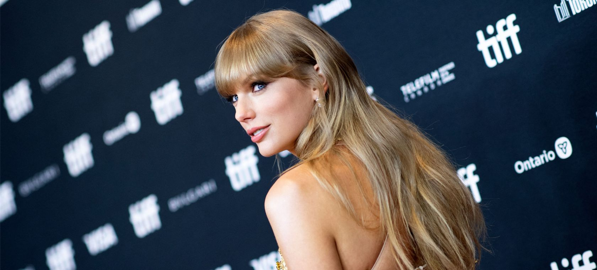
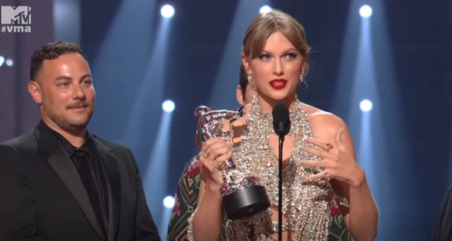

Taylor Allison Swfit es una cantautora que fue Criada en Wyomissing, se mudó a Nashville a los 14 años para realizar una carrera de música country.

Inició su carrera de cantante desde los 15 años y hoy actualmente cuenta con 9 albumes y 2 regrabaciones. Por supuesto que si te interesa saber más puedes ver sobre lo que tratan sus alumes puedes ingresar a el blog. El pasado 27 de agosto anunció su nuevo album llamado Midnights, arriba del escenario despues de ganar el mejor video del año en los MTV VMAs dijo lo siguiente "Creo que sería el mejor momento para decirles que mi nuevo album saldrá el siguente 21 de octubre y les diré más a la medioanoche".
Midnights es el decimo album de la cantante lanzado el 21 de octubre del 2022 a la medianoche y contando con 13 canciones, añadiendo que sacó un video llamado
Anti-hero
8 horas despues de la publicación del album. Desde dos días despues de su publicación este ha batido varios records en spotify conbirtiendose en el numero 1 ha nivel global en la platiforma, si te gustaría saber más de midnights puede presionar a la pestaña "midnights" de esta pagina.
